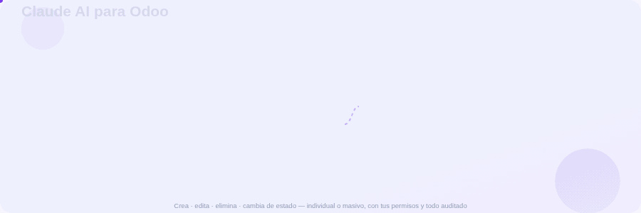

Chatea y deja que Claude cree, edite, elimine, restablezca a borrador y cambie de estado tus registros — individual o masivamente — sin apps de terceros ni instalación local.
Igual que los conectores de ChatGPT o Gemini: pegas tu API key de Anthropic en Ajustes, eliges qué modelos puede tocar Claude y conversas con él dentro de Odoo. Sin Claude de escritorio, sin terminal, sin puentes locales.
Un panel de chat nativo. Conversas con Claude y él ejecuta las operaciones por ti.
CRUD completo, individual o masivo, sobre los modelos que tú habilites.
Restablecer a borrador, confirmar, cancelar… en lote, con métodos permitidos por modelo.
Úsalo desde Claude.ai web y la app de escritorio como "conector personalizado". Sin instalar nada local.
Decides qué modelos y qué operaciones (leer/crear/editar/eliminar/acciones) puede tocar Claude.
Se ejecuta con tus permisos de Odoo. Las operaciones destructivas/masivas piden confirmación y todo queda en bitácora.
Instala el módulo y, en Ajustes → Claude AI, actívalo y pega tu API key de Anthropic.
Elige qué modelos puede tocar Claude y con qué operaciones. De fábrica solo lectura de contactos.
Abre Claude AI → Chat y pídele lo que necesites en lenguaje natural.
Abre Claude AI → Chat y escribe, por ejemplo:
/claude/mcp.Community y Enterprise.
No requiere pip extra.
Instala sin complicaciones.
Conector seguro con PKCE.
Entra a nuestra base de demostración y prueba el módulo con datos reales, sin instalar nada.
Entrar a www.kontaxes.com →Aprovecha el periodo de lanzamiento: instálalo hoy sin costo y consérvalo en tu instancia.
Conecta Odoo con Claude y opera tu negocio con lenguaje natural — seguro, auditado y sin complicaciones.
Claude AI para Odoo — por KONTAXES
Odoo 19 • Community & Enterprise • Soporte: admin@kontaxes.com